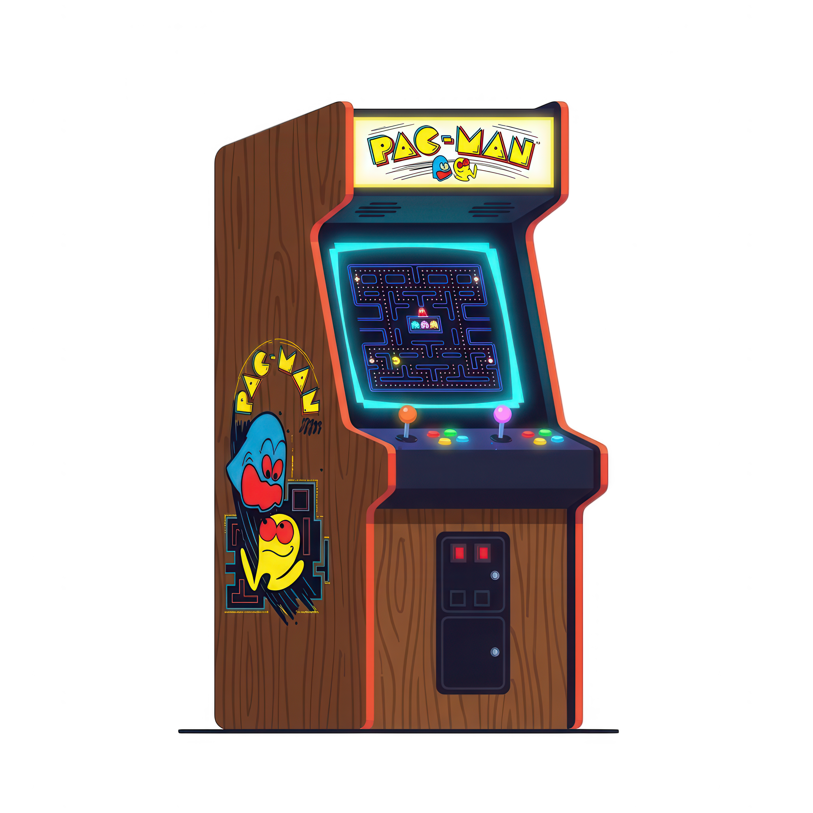
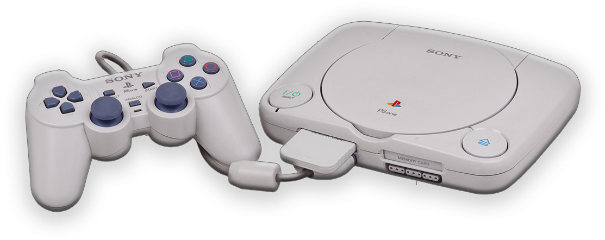
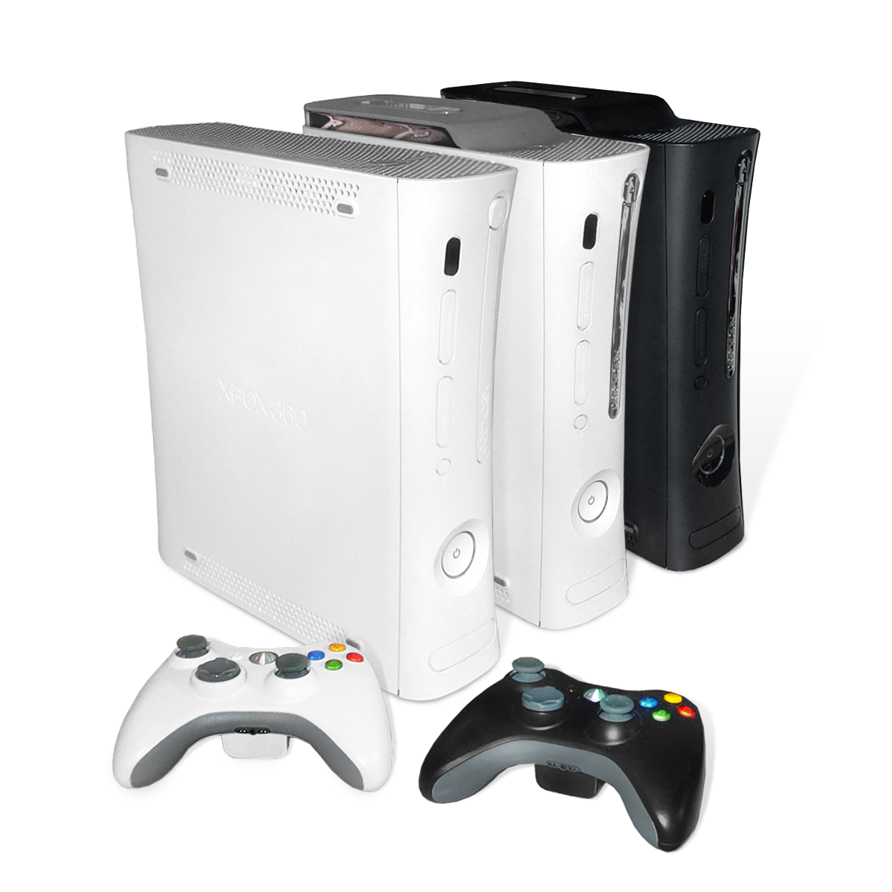
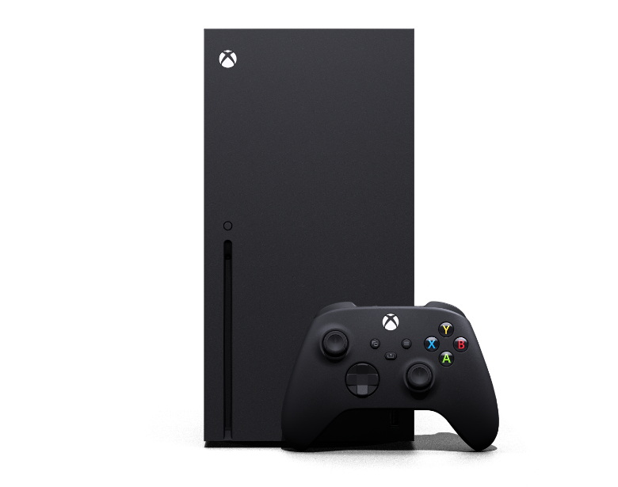

A Jornada dos Consoles
A Era dos Arcades e 8/16 bits
Nos anos 80 e 90, os videogames saíram dos fliperamas de ficha para dominar as salas de estar. Consoles lendários como o Atari, NES e Mega Drive definiram gerações com mecânicas em 2D e trilhas sonoras inesquecíveis em chiptune.


A Revolução Tridimensional
Com a chegada das mídias em CD-ROM e o surgimento do PlayStation e Nintendo 64, os jogos ganharam profundidade 3D, narrativas cinematográficas e, mais tarde, conexões globais via internet.
A Era Moderna e a Alta Definição
A partir dos anos 2000, os consoles evoluiram para oferecer gráficos em alta resolução e um maior poder de processamento em relação aos seus antecessores.


O Futuro dos Videogames
Com a chegada da 8ª e 9ª geração, os consoles modernos oferecem gráficos em 4K, iluminação em tempo real, mundos abertos expansivos e experiências de jogo imersivas que desafiam os limites da realidade.